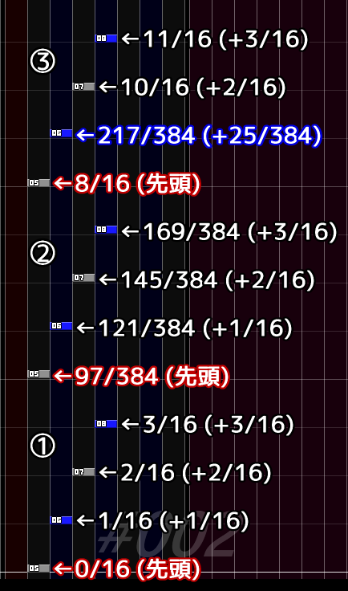

アセンブル
譜面のノート配置に従って定義された音声を統合し、1つのWAVファイルを作成する機能です。
- 全てのノートを統合すれば、そのBMSの完全な音源を作成できます。
-
一部のノートを統合し、いわばグループ化した新たなキー音を作ることもできます。
- 例えば、分割されていたアルペジオを低難度譜面1つにまとめるなどの目的で役に立ちます。
- 全てのパートを音切りして譜面を作成したあと、不要なノーツだけを統合すれば、BGMを簡単に用意できます。
説明
要素をクリックすると説明が表示されます。
「選択範囲」を選ぶと、左半分の表示が切り替わります。
「プレビュー」を選ぶと、左半分の表示が切り替わります。
相対時刻の許容誤差
-
「許容誤差」が0の場合、相対時刻の一致判定は秒数基準で厳密に行われます。
- 各ノートの位置は分数で管理されますが、秒数は小数(倍精度浮動小数点数)で計算されます。
-
この変換の際に誤差が発生しうるため、ごく僅かなノート配置のズレの他に、
テンポ変化や小節長変化との兼ね合い次第では「位置(分数)は同じはずなのに秒数(小数)は異なる」と判定される可能性があります。 - 結果として「全て置き換え」の結果が想定と異なり、一部のシーケンスが置換されない場合があります。
-
1ms以上の場合、参照元となる選択範囲内の各相対時刻に対して、前後に指定値ぶんの猶予を設けます。
- この猶予内に参照元と同じ定義番号のノートが存在する場合は、そのノートの相対時刻も一致するとみなして、置換対象にします。
-
細かいテンポ変化の存在する譜面や、連続配置等によりグリッドを使わずに配置されたノートが含まれる譜面では、
この「許容誤差」に適当な数値を指定することで、想定通りの置換結果になる可能性があります。

-
具体例として、左図のようなノートシーケンスを仮定します。
- ①に対し、②は先頭ノートの位置が異なり、残りのノートの先頭からの相対位置が同一となっています。
- ①に対し、③は先頭ノートの位置に加えて、2番目のノートの相対位置が1/384だけずれています。
-
「許容誤差」が0の場合、左図のような配置において「全て置き換え」は以下のように処理されます。
- ①を選択した場合、①と②がそれぞれ同じように置換され、③は置換されません。
- ②を選択した場合も、①と②がそれぞれ同じように置換されます、③は置換されません。
- ③を選択した場合は、③のみが置換され、①と②は置換されません。
-
例えばこの譜面の#BPMが180の場合、384分音符1個は約3.47msなので、
「許容誤差」に4ms以上を指定すると、①②③の全てが同時に置換されるようになります。